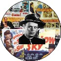

DVD Review Archive
Feature Archive Back Issues Links DVD MIA DVD
Alerts Movie Posters Laser Site Info Home E-mail
© 2002 Films on Disc Stuart J. Kobak ALL RIGHTS RESERVED.
|
|
|
DVDs Missing in Action Too many great titles are still missing from DVD. Here are a few random choices that I would love to see on DVD. Perhaps the less obvious are more interesting. Do you have any favorites missing in action? You can add your suggestions directly to the DVDMIA database by clicking DVDMIA and filling in the form. The Master List By Decade May 3, 2000 Joshua Wade of Chicago, Illinois would like to get a look at Akira Kurosawa's Dreams (1990) on DVD. Segments of the omnibus film are as beautiful as anything Kurosawa ever filmed. There are some Dario Argento flicks already on DVD, but Mark Schierenbeck of Batavia, Ohio would like to see the horror-master's terrific Suspira (1977) get a deserved release. May 1, 2000 Wherefore art thou Judy Garland films? Jerry Jeweler of Columbia, South Carolina notes the absence of Meet Me in St. Louis, (1944), The Pirate (1948), and The Harvey Girls (1946). April 19, 2000 There isn't very much Joan Crawford available on DVD as yet. Mildred Pierce (1945), directed by Michael Curtiz, won an Oscar for Crawford as am ambitious business women. This one is photographed with immense beauty by Ernest Haller. Cary Grant took the reigns of submarine command twice during his career. Destination Tokyo (1943), features an emergency appendectomy performed by an uncertain John Garfield as the sub haunts the Tokyo shores. Also absent from DVD, Operation Petticoat, 1959, is a very different take on submarine life Set in impoverished India, City of Joy (1992) stars Patrick Swayzee as a doctor searching for himself. As directed by Roland Joffe, the film gets a solid performance from Swayzee and features an outstanding supporting role for Indian star Om Puri. April 7, 2000 James Cagney's in the O.S.S. playing it cool and loose in France. Henry Hathaway directed the outstanding 13 Rue Madelaine(1946). Susan Hayward plays a woman on the rise in the fashion industry who climbs over bodies and slips out of clothes with equal aplomb. The code helped keep her dresses glued to her body. I Can Get it For You Wholesale(1951) is from the Jerome Weidman novel March 30, 2000 William Friedkin made some fine films including The Exorcist and The French Connection. Possibly the last outstanding Friedkin effort was To Live and Die in L.A.(1985), noted as missing in DVD action by Daryl Fenton of London, England. William Peterson and Willem Dafoe explore the dark and seamy side of Tinseltown. A reminder from Stephen Smedley of Vashon, Washington that the wonderful western from director George Stevens, Shane(1950) is conspicuously absent from DVD. Calling Paramount. Where are all those Alan Ladd films? March 29, 2000 Another great idea from Laszlo Layton of Burbank, Ca. is GunCrazy(1950), a lean noir classic directed by Joseph L. Lewis. Peggy Cummins and John Dahl play the gun-crossed lovers. Another Laszlo choice is The Clock(1945), starring the incomparable Judy Garland falling in love with Robert Walker before he forever became synonymous with Bruno Antony in Strangers on a Train. March 21, 2000 What better time to think of Peter Sellers' Oscar nominated performance as Chance the gardener in Being There(1979) Stephen Smedley of Vashon, Washington nominates this fine movie for a DVD release. A small, underrated British Scifi film, The Day the Earth Caught Fire(1961) is a DVD MIA sited by Peter Haller of Avon Lake, Ohio. Amongst the lost souls of Film Noir, Steve Thompson is one of the more memorable saps. Burt Lancaster is great as the hulking ex-con caught in a web of deadly spiders in Criss Cross(1949). The tepid remake directed by Steven Soderbergh, The Underneath(1995), is already available on DVD from Universal.
March 19, 2000 One of the best examples of using documentary style techniques to make a fictional film, The Battle of Algiers (1965) is a riveting experience. Wouldn't it be nice to get a new DVD transfer of this dynamic film. It might even make director Gillo Pontecorvo's day. Whenever you see Marlon Brando in a contemporary film, you can't help remembering how magnificent the young Brando was in a variety of film role. On the Waterfront(1954) must be ready to come out of the classic Columbia vaults pretty. Brando's Terry Malloy is a great screen character. This one could be a contender for one of the better classic DVDs released this year. Amongst the lost souls of Film Noir, Steve Thompson is one of the more memorable saps. Burt Lancaster is great as the hulking ex-con caught in a web of deadly spiders in Criss Cross(1949). The tepid remake directed by Steven Soderbergh, The Underneath(1995), is already available on DVD from Universal. March 16, 2000 Quite simply put, Breathless(1960) is a good idea points out Rob Sweeney of Binghamton, New York. Jean-Luc Goddard's debut feature film vaulted him to the forefront of French New Wave cinema and made Jean-Paul Belmondo an international star in the bargain. John Carpenter fans are still awaiting the arrival Snake Plissken's New York arrival. Craig Tunnicliffe of Baltimore, Maryland thinks Escape from New York(1981) would make a fine looking DVD. One of Charlton Heston's favorites from a long career is Will Penny(1968). The gritty Western is no typical shoot 'em up, but is a sensitive film about human relationships. Speaking of Heston and Westerns reminds me that the very entertaining film Pony Express(1953)has never had a high end video release. Wouldn't you like to see the luscious red hair of Rhonda Fleming aflame against the Western skies. March 13, 2000 Hector Babenco's Pixote(1981) devastating portrait of street kids on the wild in São Paulo, Brazil is another savvy Laszlo choice for a DVD release. Another Laszlo selection is the fascinating portrait of colonial life in South Africa, White Mischief(1987). This one stars Greta Scacchi in a very sexy role plus a host of outstanding supporting actors exploring boredom and perversity. March 10, 2000 Along with the already note The Adventures of Robin Hood(1938)missing from DVD, Stephen Jacobs of London, England note the absence of another Errol Flynn Swashbuckler, The Sea Hawk(1940). How about it Warner, let's step up the classic release activity. A Redondo Beach, Ca. reader points out that Rita Hayworth's hot lady Gilda(1946) has yet to find her way to DVD. Oh well, let's put the blame on Mame.
March 6, 2000 Lorelei Lee poured into a tight-fitted sequined gown has not shaken her tail for DVD as yet. Marilyn Monroe made the character jiggle to life on the widescreen in the Howard Hawks directed comedy Gentlemen Prefer Blondes(1953). Jane Russell aids and abets in hooking the gents. A brilliant view of the colonial America in conflict with the Indians, John Ford's classic Drums Along the Mohawk(1939) should not be missed. Starring Claudette Colbert and Henry Fonda, Ford's film is an early Technicolor film that could look great on DVD. Is it almost twenty years ago that Brian De Palma directed John Travolta in the excellent thriller Blow Out(1981). The Panavision film should look gorgeous in an anamorphic widescreen DVD. An outstanding Western with a light-hearted spirit, Dodge City(1939) stars Errol Flynn and Olivia de Havilland and is directed by Michael Curtiz. In glorious Technicolor. February 29, 2000 Here's a chilling want list from Marshall Deutalbaum: The Boston Stranger(1968) and In Cold Blood(1967). Tony Curtis does a good job as Albert De Salvo. Paul Blay of Annapolis, Maryland would like to see Firefox(1982) take off on DVD. It would be nice to see the Eastwood pyrotechnics take off again. For aficionados of noir, a beautiful French caper film, Bob le Flambeur(1955) would make an outstanding DVD release candidate. Directed by Jean-Pierre Melville, the film is a perfect exercise in the simple and direct filmmaking approach. And how about Le Samurai(1967), another Melville directed film starring Alain Delon as a hitman with style. February 22, 2000 I don't know why looking out at the snow still covering the garden slopes made me recall The Mortal Storm(1940). Maybe it was a vaguely remembered escape in the snow. The wonderful film stars James Stewart and Margaret Sullavan as two young people in a small German town that are affected by the burgeoning Nazi pre-war presence. The Shop Around the Corner(1940) pairs Sullavan and Stewart in an exquisite romantic comedy set in picture postcard Budapest, snowflakes falling in perfect crystals made just for MGM. Remade as You've Got Mail with Tom Hanks and Meg Ryan. Another that deals poignantly with aspects of the war, So Ends Our Night(1941), travels the roads of displaced European running from the encroaching Nazi presence. Along with Margaret Sullavan, Frederic March and Glenn Ford are memorable. February 19, 2000 Still hot after the twin triumphs of Lawrence of Arabia and Becket, Peter O'Toole starred in the Joseph Conrad adventure tale Lord Jim(1965). Gregory Krewet of New Braunfels, Tx notes the absence of this widescreen epic on DVD. David Sopko of Somerset, NJ thinks M*A*S*H(1970) deserves a DVD release. Robert Altman's breakthrough film features satire delivered with surgical precision. One of my favorite films is Ivanhoe(1952). It's a magnificent example of knights in battle for the honor of fair maidens. Robert Taylor, Elizabeth Taylor and George Sanders make it come alive. February 17, 2000 Todd Goldstein of Medford, MA notes the DVD absence of Hal Hartley's very interesting Trust(1990). Hartley is the first of the successful 1990's Indie filmmakers to have some minor mainstream impact. Amateur(1994)is another of the director's eccentric oeuvre not yet released on DVD. A lovely film about a young woman honing her independence, Ruby in Paradise(1993) stars incandescent Ashley Judd in a fine performance . Victor Nunez, who hit critical mass with the 1997 Ulee's Gold, directed. Dick Powell started his film career hoofing and singing in a variety of Hollywood musicals. The forty-odd films he made before starring as Phillip Marlowe in Murder My Sweet(1944) provided no hint of the hard-boiled style that Powell could deliver. A terrific film that deserves a fast DVD release. February 15, 2000 We are still waiting for the release of Krzysztof Kieslowski's brilliant trilogy Trois Couleurs. The first film, Bleu(1993), stars the magnificent Juliet Binoche, lighting up the screen with her sparkling presence. If Bleu is released, can Bialy and Rouge by far behind. Chuck Tomaselli of Seabrook, NH notes the absence of Ocean's Eleven(1960) on DVD. Frank Sinatra is Danny Ocean in this heist film set in Las Vegas, the most representative of the "rat pack" films. In Phoenix, Arizona, Lindsay Crane is hoping to find Fist in his Pocket(1965)on DVD. The Marco Bellocchio film is called I Pugni in tasca, in its original Italian language.
February 9, 2000 One of the greatest Hollywood films about Hollywood is Vincent Minnelli's The Bad and the Beautiful(1952). Kirk Douglas stars as ruthless movie mogul Jonathan Shields and Lana Turner turns heads as his movie queen. Not to be missed and waiting for a DVD release. The fine companion film, Two Weeks in Another Town(1962), is another look at Hollywood from in an Italian setting. Kirk Douglas stars for Vincent Minnelli as actor Jack Andrus. Marvelous chemistry between Douglas and Edward G. Robinson as director Maurice Krueger. Widescreen and wonderful! A third Kirk Douglas collaboration with director Vincent Minnelli is Lust for Life(1956). This time Douglas cuts off his ear as Vincent Van Gogh. It's a beautifully made film that would make a gorgeous anamorphic widescreen DVD. February 6, 2000 There's a great black comedy from Australia hiding out there amongst the missing in action. Jocelyn Moorhouse's Proof(1991) features outstanding performances from Hugo Weaving as a blind photographer and Russell Crowe as the young man who befriends him. My advice, don't drive with Martin. Pride of the Marines(1945) is another film that deals with blindness in very different term. The tale of war hero Al Schmid stars John Garfield and Eleanor Parker deals with the war and its aftermath. Brazilian movie lover Paulo Roberto Elias notes the absence of the excellent Little Murders(1971). Directed by Alan Arkin from a screenplay by Jules Feiffer, this black comedy provides devious delight. Boccaccio '70(1962), an omnibus film, showcases the talents of several of Italy's master directors, Fellini, De Sica and Visconti. With beauties like Sophia Loren, Anita Ekberg and Romy Schneider, she certainly deserves a high tech video release. Alan Arkin is wonderful as the deaf mute who helps a young girl through emerging womanhood in The Heart is a Lonely Hunter(1968). A sad and beautiful film set in the South of Carson McCullers. February 2, 2000 Where is one of the funniest movies I remember? Now, I know memory often distorts, but A Slight Case of Murder(1938) has the most wonderful premise: Gangster Remy Marco, trying desperately for suburban legitimacy, finds a succession of bodies interfering with his social ambitions. Edward G. Robinson is no less than perfect as Marco. Calling Warner Home Video! Fred Manteghian heard Johnny Stecchino(1991) is hilarious. Where's the DVD Fred wonders. Well, he's right, Roberto Benigni's wonderful comic romp will have you alternately crying with hilarity and holding your stomach from laughter cramps. Keith Burnage who operates the entertaining site Rick's Cafe Americain , noted that The Harder They Fall(1956) is due a DVD release. Rick's, you may have guessed, is devoted to Bogart. One of Sam Peckinpah's most eccentric films, Bring Me the Head of Alfredo(1974), is suggested for DVD release by Keith Storer. Robert Temple is looking for Lonely are the Brave(1962) the wonderful film starring Kirk Douglas as a modern day cowboy looking to preserve some sense of the Western past. January 31, 2000 An excellent film noir starring Ida Lupino and Cornel Wilde, Road House(1948). Richard Widmark is on hand to make things very interesting. How can you resist a film with a character called The Butcher of Barcelona. Anthony Quinn is one of the crew called upon to do the impossible, disable The Guns of Navarone(1961). Gregory Peck commands the mission under the crisp direction of J. Lee Thompson. Speaking of Quinn, still missing from DVD is the often thrilling Viva Zapata(1952). Marlon Brando is great as Mexican revolutionary Emiliano Zapata. Quinn got the Best Supporting Actor award as Brando's brother. Elia Kazan directed from a script by John Steinbeck. January 29, 2000 The Magic Box(1951) stars Robert Donat as photographic pioneer William Friese-Greene, who, as the film hypothesizes, is the real father of motion pictures. Friese-Greene is a splendid role for Donat. What a shame that this film is currently not available on video, much less DVD. The script by thriller writer Eric Ambler is articulate and sophisticated. Speaking of Eric Ambler, where is that wonderful film called The Mask of Dimitrios(1944)? Sydney Greenstreet and Peter Lorre renew their acquaintance from The Maltese Falcon and six other films in which the two actors exchanged barbs. January 27, 2000 Circus movies offer a fascinating panorama for the movies. The Greatest Show on Earth(1952)directed by Cecil B. DeMille is one of the best circus flicks ever. You can taste the sawdust. Sure would be nice if Paramount went on the high wire with a new pressing. One never associates John Wayne with the circus, but in Circus World(1964) he manages to combine his Western persona with the big top. Claudia Cardinale and Rita Hayworth provide the glamour. One circus movie I haven't since they had double featured in the theaters in The Big Circus(1959). Now, I can't really vouch for this one, but there is a pleasant lingering memory of colorful acts and stunning images. Victor Mature is the circus boss. The Marx Brothers At the Circus(1939) contained two of my favorite celluloid scenes. In one scene, Groucho and Harpo are in the circus wagon of two of the show's midgets. Everything is scaled down to accommodate the small people. Just imagine the possibilities. The other scene is Groucho's rendition of "Lydia, the Tattooed Lady," with accompanying shenanigans from Harpo. My spirit soars at the very thought of it. January 26, 2000 Frankie Ballou's little girl has one thing on her mind; revenge for the murder of her father. In the hilarious Cat Ballou(1965). Jane Fonda plays the Cat of the title and Lee Marvin is the gunfighter hired to do the job. Marvin won an Academy Award as Best Actor for dropping his draws to most hilarious effect. January 21, 2000 Now that it seems like three versions of every James Bond film is on DVD, it's time to think about Sean Connery in some of those small films that showed off his acting talent. Did you ever see The Hill(1965)? Not just a great performance from Connery as a British Sergeant Major imprisoned for cowardice, but Harry Andrews is amazing and Ian Bannen nothing short of brilliant. The Hill from Sidney Lumet. Another Lumet/Connery collaboration, The Offence(1973) is sorely missing from high end video. This time Connery is a cop that loses it. The third Lumet directed Connery effort is The Anderson Tapes(1971) with Connery playing a small time crook with big ideas. January 20, 2000 Certainly, it's just around the corner, turning up river toward a DVD release, but I can't wait until The African Queen(1950)makes her maiden DVD voyage. Charlie Allnut and Rosie Sayer finding romance amidst the grease and leaches, running the rapids with magnificent spirit, is a stirring memory. Humphrey Bogart and Katharine Hepburn are dynamite. January 19, 2000 I am still awaiting release word on the grand view of Hollywood starring Judy Garland and James Mason, A Star is Born(1954). Promised in anamorphic widescreen, the best elements are still being finalized. Speaking of movie stars, Bette Davis did her share of battling the big wigs at Warner Brothers. In The Star(1952), the feisty Davis plays a movie queen on the way down. This one never even got a laser release. From stars to queens reminds me of For Queen and Country(1989). An intense, small film from Britain, this one stars Denzel Washington as a British soldier returning home to disappointment. January 17, 2000 I love a good ghost story, with the emphasis on story. The Uninvited(1944) is a beauty. It relies on ambiance to create eeriness without special effects. Ray Milland and Russ Hussey star in the black and white film directed by Lewis Allen. One of the few Michael Curtiz directed films never to get a high end video release, The Unsuspected(1947) stars Claude Raines in a fine murder mystery. January 13, 2000 One of the most beautiful childhood memoirs on film, Hope and Glory(1987) treats John Boorman's recollections of the war years in Britain as his innocence was tinged by the realities around him. The women in his life are played with terrific effectiveness by Sarah Miles and Sammi Davis and Ian Bannen does a marvelous turn as the Granddad. Thinking of childhood, there's a father and son scene is in a little Swedish film called The Slingshot(1993)that plays with exquisite sensitivity. Stellan Skarsgård is the poppa in this wonderful film. I'll never forget that hot dog! January 11, 2000 Spencer Tracy making love to Lana Turner leaves a bit of hope in every guy's heart. The film is Cass Timberlane(1947). Zachary Scott slithers into the picture to lure Lana away from Tracy. Well, yes, it heavy duty melodrama, but I haven't seen it in a million and it would make a nice addition to the DVD lists. Here's one I have never seen, but the ingredients are just too good to ignore. Another Spencer Tracy film that is rarely talked about, Malaya(1950), also stars James Stewart and has Sydney Greenstreet on board for a little spice to the adventure. I have a great poster of this one on my office wall reminding me I'd like to see the flick. Kirk Douglas in anything, I always say. Well, maybe not anything, but how about The Juggler(1953). Set in Israel, this Edward Dmytryk film stars Douglas, as, you guessed it, a juggler. He can also juggle a gun with pretty good effect. January 10, 2000 I just received a list of titles from movie hungry Harold Gervais. Click on his name to access his whole list. My favorite missing in action suggestion from Harold is the hilarious The In-Laws(1979). The script is by Andrew Bergman before he made gems like The Freshman and Honeymoon in Las Vegas. Other worthy citations from this movie lover are Seven Days in May(1964) and Unfaithfully Yours(1948). There's one film from Zhang Yi-mou that I would love to see in a sparkling DVD edition, Red Sorghum(1987). That's the wonderful Chinese filmmaker's first feature as director. January 7, 2000 You never know what might set off the desire to see any given film. Here in Las Vegas for the Consumer Electronic Show, a delightful dinner at Nobu, a fanciful Japanese restaurant, the president of Peru came up in conversation. The combination of setting and topic prompted a memory of the wonderful 1966 film from Japanese director Susumu Hani, Bride of the Andes. Exquisitely filmed, this story of Japanese settlers in Peru potentially could make a stunning DVD. I wonder who has the rights to it. Another very beautiful film, Picture Bride, made in 1995, is the tale of a young woman who comes to Hawaii as a mail order bride to an older Japanese man. The lush settings and exquisite photography make this an outstanding DVD release candidate. January 3, 2000 I was recently at the Ringling Museum in Sarasota and I saw this great photo of the cast and principal crew of The Misfits. It was a posed composition, almost like a wedding photo. There was Gable looking comfortable in cowboy garb, Monroe looking casually sensual, Arthur Miller standing alongside with a proprietary glint in his eye, Montgomery Clift, worn with the pretty boy looks gone, Eli Wallach looking eager and energetic and John Huston standing tall and commanding. Isn't it about time for The Misfits on DVD. The tale of Ahab's legendary quest is another John Huston movie not yet on DVD. Huston's 1956 Moby Dick stars Gregory Peck as the man with a mission. January 2, 2000 I am in the midst of reading Cameron Crowe's` brilliant interview book Conversations with Wilder, so I could simply cry out for everything by Billy Wilder, but I'll be simpler. I don't recall the painfully accurate Ace in the Hole ever getting a laser disc release. A movie starring Kirk Douglas directed by Billy Wilder deserves first class treatment. The 1951 picture should get a glorious black and white transfer for DVD. Speaking of Kirk Douglas, another film that you can't see in the best current video software format is the 1948 I Walk Alone. Directed by Byron Haskin, this noir film is the first pairing of Douglas with Burt Lancaster. January 1, 2000 Steven Zaillian made a fine directing debut in 1993 with the insightful Searching for Bobby Fischer. There's great father/son interaction in this film about a chess prodigy. How about an insightful DVD release from Paramount soon? Speaking of chess, Boaz Yakin's debut film, Fresh, is a terrific film. It too details the days of a chess-playing kid, from a very different point of view. Paging Disney. Directors of the moment seem to come and go. Jerry Schatzberg made some tough movies in the seventies and eighties like Panic in Needle Park, Scarecrow, and Street Smart. The last major Schatzberg release, Reunion,1989, came and went faster than a speeding bullet, and it was a very good film, perhaps marred by some stiffness, but dramatically potent. This would make a very good anamorphic widescreen DVD. Hell, how about releasing all of them. December 31, 1999 There are still plenty of Swashbucklers wanting a DVD release. The Black Swan, starring Fox's perennial box office leader Tyrone Power is a colorful pirate yarn in glorious Technicolor. The 1942 adventure movie features the beautiful Maureen O'Hara, with flaming red hair ablaze. It's another remake of a Douglas Fairbanks silent movie vehicle, with Power doing the swashbuckling with grand flare and quick repartee. It's a long time since I had the pleasure of John Ford's often wry look at western legends, The Man Who Shot Liberty Valance. John Wayne, James Stewart, and Lee Marvin face off in this 1962 classic. You could even view this film as an interesting take on celebrity. Peter McMonigle is hoping
to see a widescreen DVD version of Wizards, Ralph Bakshi's 1977 animated fantasy. December 28, 1999 Horror films come in many different flavors. Those that tantalize the intellectual are stimulating. Those with stunning visual power can be mesmerizing. It's unusual to have your cake and eat it too, but The Reflecting Skin, a gothic horror tale from director Philip Ridley manages to do it. This 1990 film would make a great addition to the DVD catalog. December 26, 1999 I saw a Willem Dafoe flick the other night and I thought back to the devastating Triumph of the Spirit directed by Robert Young in 1989. Dafoe plays a boxer interned by the Nazis. His performance is terrific and so is the film. And there's a marvelous turn by Edward James Olmos as well. Oh, yes, that other Dafoe movie, The New Rose Hotel was a big muddle. The Whole Town's Talking is a wonderful John Ford comedy made in 1935 starring Edward G. Robinson and Jean Arthur. This would be a great choice for the Columbia Classics series, Come on Columbia. December 24, 1999 Reader Darrell Matthews has a long list of titles he'd like to see on DVD soon, including Belle époque, Fernando Trueba's 1992 wry Oscar winning comedy. The Spanish film delights in it's off-beat humor. Wanna see more of Darrell's picks? Click on his name. Speaking about off-beat sensibilities, Michael Verhoeven's outstanding film, The Nasty Girl deserves a DVD release. This 1990 German film deals with the search for truth in unique terms. Stunning photography and stirring material make this a must-see film. HBO released the film on laser a number of years ago. Are you listening HBO? Miami Blues was a pretty off-beat film itself about a hit man, a hooker, a disheveled detective. Alec Baldwin, Jennifer Jason Leigh and Fred Ward are an entertaining trio in George Armitage's 1990 film from the Charles Willeford novel. December 23, 1999 After seeing The 39 Steps, I was reminded that North By Northwest, Hitchcock's glorious 1959 adventure starring Cary Grant and Eva-Marie Saint has not yet gotten an anamorphic or any other DVD treatment as yet. These two Hitchcock films make great companion pieces for comparative analysis. Here's another title from "old reliable" missing from DVD. The Coca-Cola Kid , 1985, is an off-beat entertaining comedy set Down Under. A Coke troubleshooter is sent across the globe to investigate a soda anomaly. Eric Roberts woos Greta Scacchi along the way. Speaking of Down Under, I don't recall Peter Weir's fascinating film The Last Wave even getting a laser disc release. Wouldn't it be nice to have this mystical 1977 film on DVD. How about a Peter Weir commentary. I sure would love to hear him expand on the filmmaking process. One of the funniest comedies ever to tickle my funny bone, To Be or Not to Be starred a deadpan Jack Benny and the wonderful Carole Lombard. The 1942 Ernst Lubitsch comedy would make a wonderful addition to the DVD collection. December 22, 1999 Boy, would I love to see a beautiful anamorphic DVD of Robert Altman's vastly underrated Popeye. The widescreen film never has gotten a proper video treatment. Altman was right on the money with this comic strip musical. He captures the flavor of Popeye's world and the production design makes Popeye look terrific. Robin Williams is amazing as Popeye. I never really got The Pope of Greenwich Village, so I can't recommend it, but a reliable friend whispered in my ear that he sure would like to see this title on DVD. Eric Roberts and Mickey Rourke, who these days seem more interested in fisticuffs, star as a pair of punks. In 1984 Garry Marshall directed a very funny, on the money film about Long Island beach clubs. The Flamingo Kid starred a young Matt Dillon looking to learn all about it from a savvy Richard Crenna. Kirk Douglas is back on the big screen in a new film called Diamonds. He's playing a former prize fighter recovering from a stroke. Douglas starred in the 1949 film Champion as boxer Midge Kelly. It's an unforgettable performance and I suspect it will be on DVD real soon. December 16, 1999 Ang Lee is busy in China making a new kung fu movie starring Chow Yun-Fat, Gong li and Michelle Yeoh. That's right, Ang Lee, the director of Sense and Sensibility, The Ice Storm, The Wedding Banquet, and Eat Drink Man Woman. The later film made in 1994 is a sumptuous ode to chinese cuisine and a fascinating look at family relationships. Lawrence of Arabia is perhaps too obvious in its absence. Look for Lawrence, in all his desert glory, to arrive on DVD in the second or third quarter of 2000. That DVD on the horizon is no mirage. How about Easter Parade? Fred Astaire barely letting his feet touch the ground, Judy Garland at her most charming, a classic example of the great MGM musical making tradition. It's worth owning a DVD of the movie for the "Drum Crazy" number alone. Speaking of Astaire, there's a conspicuous drought of his films. Give me a glorious, spectacular, Technicolor, stereophonic, breath-taking, anamorphic DVD of Silk Stockings, the fabulous musical remake of Ninotchka. The sting of the dialogue is as fresh as honey from a buzzing hive. The Sweet Smell of Success languishes in my laser library rife with rot. A brilliant New York City show business film with as cynical an edge as you'll ever want to watch. Burt Lancaster is the venomous daily gossip columnist and Tony Curtis is the oily PR guy. That would make one sweet and sour DVD. I cannot believe The Adventures of Robin Hood has not been released on DVD yet. Will Robin climb a balcony to Maid Marion any time soon. That would be a nice Millennium gift for me.
|
Selections from the Feature Archive include articles on Akira Kurosawa, Frank Darabont, Blonde Bimbos, Hollywood Street Gangs, or Vietnam: The Hollywood Pariah, and many more....  Is North by Northwest Hollywood's definitive exploration of the nose? From schnozzles to beezeers, film mavens make the most of the foremost. Click on Mount Hitchcock for more.
Screen Voices Richard Widmark  Sophia mi Amore |


.jpg)